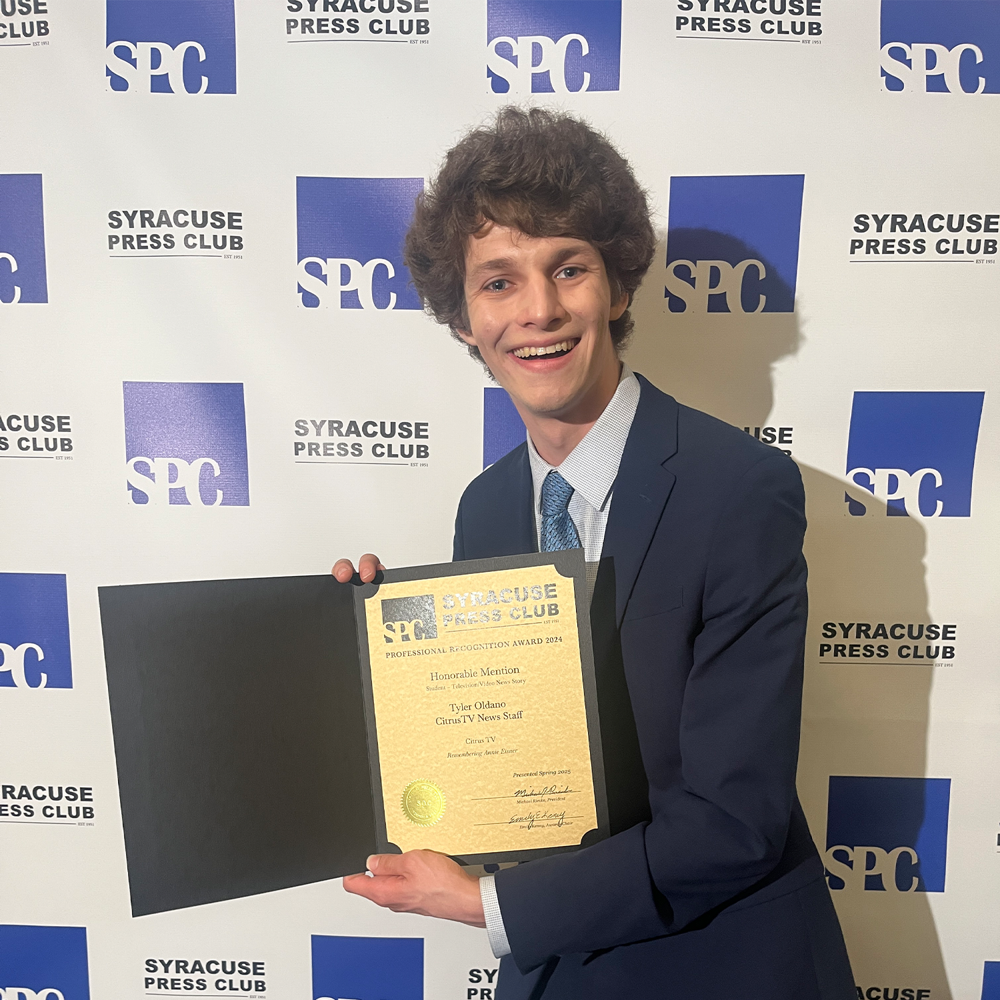
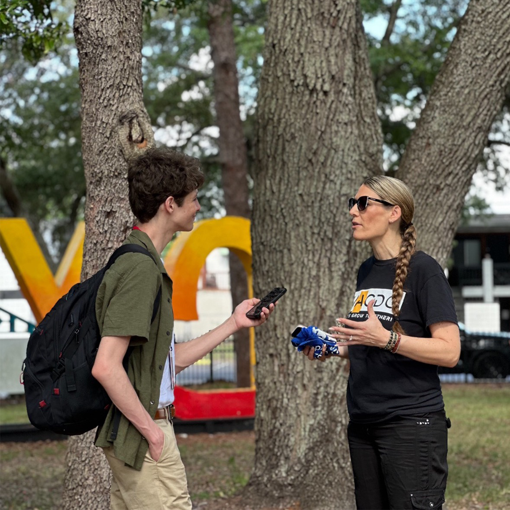

I've been a reporter for student and professional media throughout my college career and enjoy telling the stories of my community

Award Winning Journalism
My student reporting has been honored at the Syracuse Press Club, Green Eyeshade Awards, Sunshine State Awards, and Florida Association of Broadcast Journalists

Experience with Multiple Platforms
I have experience producing content in different formats including print, digital, social media, and traditional broadcast. I'm also always interested in exploring the future of our industry with my technical skills (I coded this website myself you know).
Good Morning/Afternoon/Evening! My name is Tyler Oldano, and I’m a student journalist finishing up my time at Newhouse. I spend a lot of my time telling community-based stories, anchoring for CitrusTV, and trying to inform others in engaging ways.
When I was a kid, I had no idea *this* was my calling. I initially wanted to be an actor. When I realized that living life audition to audition wouldn’t exactly be the best way to live. I realized early on that my nerdiness and presentation skills were my best traits and pivoted my life into being a broadcast journalist. I did some journalism work in high school, but really began to explore the field when I went to college. It’s there that I discovered CitrusTV and devoted the next 3+ years of my life to being a Multimedia Journalist.
Since then, I continued on the path. I’ve interned for or worked with every major news outlet in Syracuse, except WSYR. A piece I shot, edited, and wrote myself received an honorable mention at the Syracuse Press Club, and articles that I wrote for WMNF won student reporting awards at several competitions in Florida.
I’m now capping off my senior year, and want to pass down what I’ve learned to the next generation of journalists, especially those at CitrusTV, as my time there was foundational to who I am today. This website is my way of saying “thank you” to the station and community that supported me and gave me a home during my undergrad years.